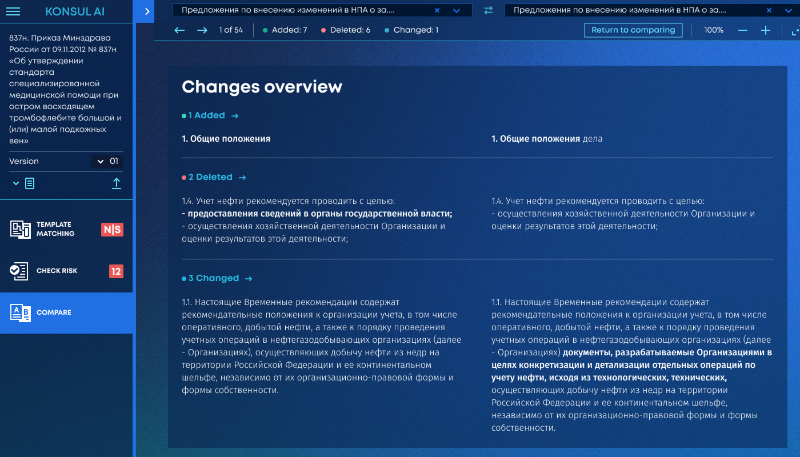
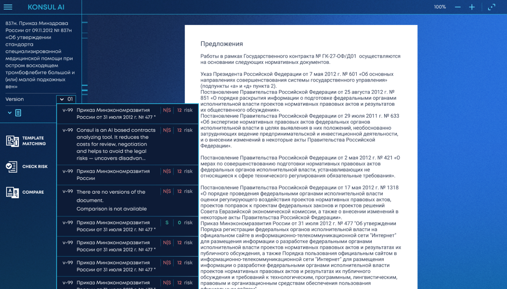
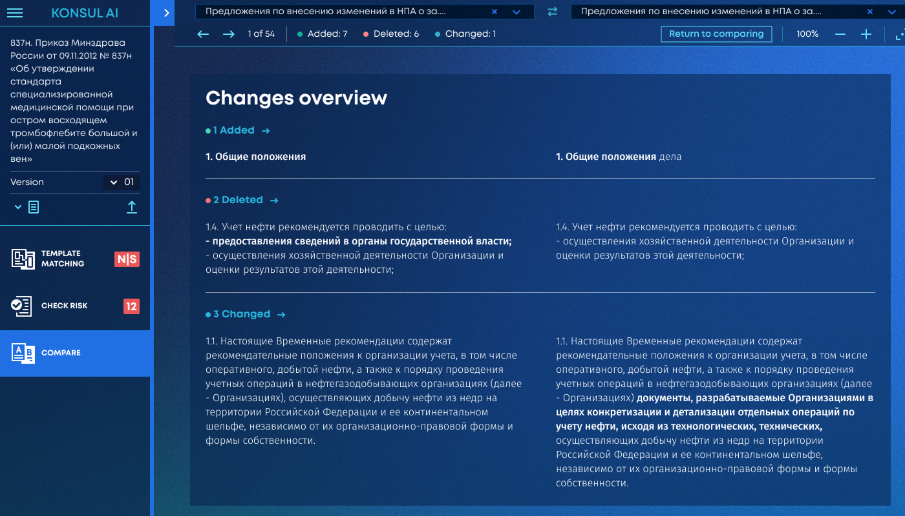
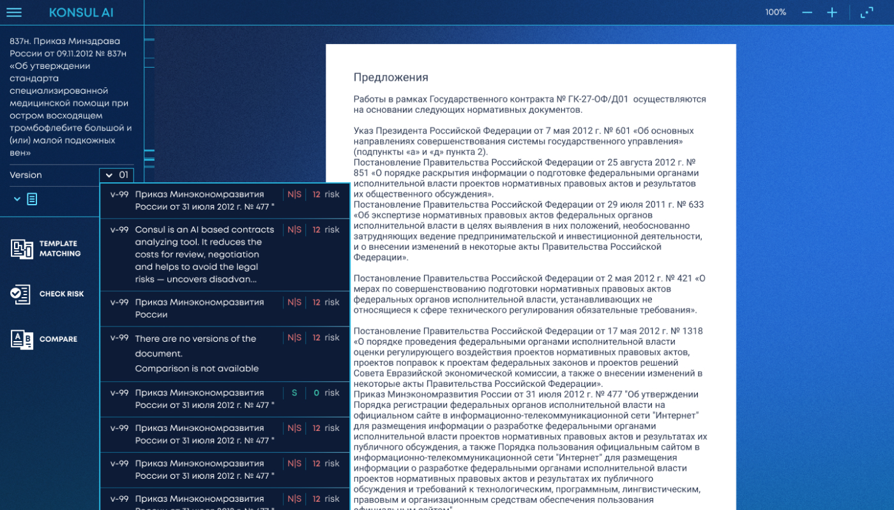

Senior Product Designer
Senior Product Designer с 15-летним опытом. Превращаю сложную бизнес-логику в интуитивные интерфейсы. Специализация: SaaS, IoT, Data Viz, Design Systems.
Курсор
Интеллектуальный поиск и управление знаниями. Коробочное решение для Газпром Нефть и Полюс Золото.
Consul
Платформа для анализа рисков и комплаенса. Bring Your Own Data концепция.
ITSLAB
Интерфейс управления умными светофорами и аналитика городского трафика в реальном времени.
РА Гордость: Брендинг
Кейсы: Lammerum, Лето Близко, Ambassador, GGG, План Б. Полный цикл.
ЕРОТ (Минцифры)
Единый реестр обязательных требований. Федеральный запуск для бизнеса и ведомств.
ЦНМД и СЭД
Экосистема для работы с корпоративными документами. Газпром Нефть.
Contract
Коммерческое коробочное решение для Siemens и Сибур.

Демо-стенд «Сравнитель»
B2C-подобный сервис для быстрой демонстрации сложных enterprise-технологий.
Cursor 2.0
Редизайн коробочной версии. Эффектный концепт в темной теме для повышения продаж.
РФФИ Граф
Визуализация данных и связей между учеными, грантами и институтами.
 


